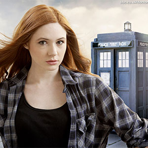

| Home The Doctors The Companions The Villains | |||||||||
 |
|||||||||
|
Amy PondKaren GillanAmelia Jessica "Amy" Pond is a fictional character portrayed by Karen Gillan in the long-running British science fiction television series Doctor Who. Amy is a companion of the series protagonist the Doctor, in his eleventh incarnation, played by Matt Smith. She appears in the programme from the fifth series (2010) to midway through the seventh series (2012). The Doctor first meets Amelia when she is seven years old and disturbed by a crack in her wall. He promises to return to the lonely girl in 5 minutes and take her with him in his time and space machine the TARDIS, but accidentally arrives twelve years later, by which time Amy has become cynical about her "imaginary friend". However, she eventually decides to travel with him, and the duo are later joined by her fiance Rory Williams (Arthur Darvill). Amy and Rory marry at the end of the fifth series and in the sixth series Amy gives birth to their daughter, Melody Pond, who is revealed to be recurring character River Song (Alex Kingston). Amy Pond has appeared in several Doctor Who video games. Voiced by Gillan, she appears in all five episodes of Doctor Who: The Adventure Games which were marketed as extra episodes.[31][32] The virtual character was created using rotoscoping of Gillan's movements.[33] She also is featured, voiced by Gillan, in the 2010 video games Doctor Who: Evacuation Earth and Doctor Who: Return to Earth, made for the DS and Nintendo Wii respectively.[34] Amy also appears in the smartphone app game Doctor Who: The Mazes of Time.[35] |
||||||||